This exam covers climate science, electricity and magnetism, waves, light and heat, and scientific method.
Section A: Multiple choice (28 marks)
Which one of the following types of radiation is emitted by the Earth's surface back into space?
Which of the following would not be a greenhouse gas?
Molecules with only two atoms (such as N2 and O2) do not absorb infrared radiation, so they are not greenhouse gases.
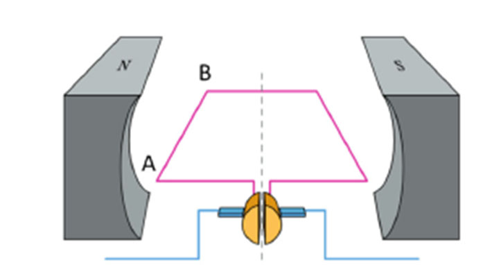
Based on the current connection shown (− on the left, + on the right), which describes the direction of the force on side AB?
The symbol shows current in a wire. Which way would a compass point if it were placed at point P, to the right of the wire?
The current is into the page, so by the right-hand grip rule the field circles clockwise. On the right-hand side of the wire, clockwise is downwards.
Which of the following would not be considered a renewable energy source?
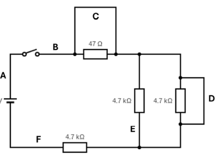
Referring to the circuit above, which option gives the correct location of an ammeter and a voltmeter?
B is in series in the main wire (ammeter); D is connected across a resistor, in parallel (voltmeter).
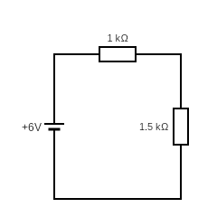
Which is the correct direction of the electron flow in the circuit above?
Conventional current flows out of the + terminal (at the top) and around clockwise; electrons flow the opposite way, from the − terminal, anticlockwise.
What is the name and purpose of the device in a solar energy system that links a PV array to household devices such as a fridge?
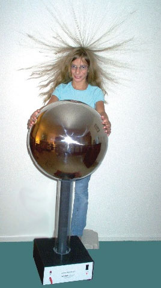
A person keeps their hand on a positively charged Van de Graaff generator, which makes their hair stand on end. Which statement best describes this effect?
Which word describes the nature of magnets, even when a larger magnet is broken into smaller parts?
Which best describes what happens when light hits a smooth mirror surface?
Which statement about sound waves is correct?
Which method of heat transfer involves the movement of heated fluid (liquid or gas) from one place to another?
When white light passes through a triangular prism, it splits into a spectrum of colours. What is this process called?
Which of the following correctly pairs the term with its definition?
Which is the best estimate of the period of a wave with a frequency of 125 Hz?
T = 1 / f = 1 ÷ 125 = 0.008 s = 8 ms.
Which best explains an afternoon coastal sea breeze?
Questions 18–20 refer to the wave diagram below. The wave travels at 110 m/s.
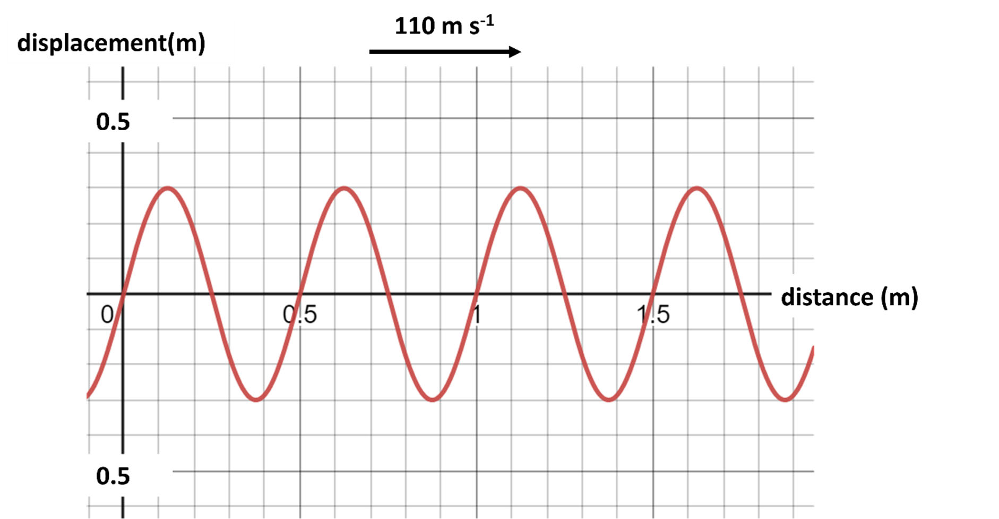
Which is the best estimate of the amplitude of the wave?
Which is the best estimate of the wavelength of the wave?
Which is the best estimate of the frequency of the wave?
f = v / λ = 110 ÷ 0.5 = 220 Hz.
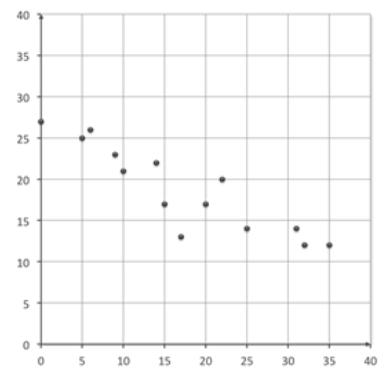
An investigation produced the graph above. Which is the best description of its trend?
A student hypothesises that "Adding fertiliser increases plant growth." All the options below would improve this hypothesis except:
Use this information for Questions 23 and 24. Romeo and Lavia want to find the time it takes for sugar to dissolve in water at different temperatures. They measure 500 mL of water in a beaker and heat it over a Bunsen burner. Romeo monitors the water temperature, starting at 20 °C. Each time the temperature rises by 10 °C, he adds 5 g of sugar. Lavia stirs the beaker once every second and measures the time for the 5 g of sugar to dissolve completely. They continue until the water reaches 50 °C.
Which is the dependent variable?
How could Romeo and Lavia improve their experiment?
Adding sugar to the same water each time means the water already contains dissolved sugar, so the amount of sugar is not controlled.
A class is investigating how the mass of a carrot placed in an oven decreases over time. Which type of graph best shows how the mass changes over time?
Eight groups of students carry out the same experiment on a chemical reaction. Only one group notices bubbles forming. What should they do?
Which is the best way to reduce systematic error in a measurement?
If a student's results do not support their hypothesis, what should they do next?
Section B: Short answer (45 marks)
Complete the table, which lists key parts of the carbon cycle.
| Process | Carbon capture or release (into the atmosphere) | Formula / description |
|---|---|---|
| Release | 6O2 + C6H12O6 → 6CO2 + 6H2O | |
| Combustion of | Release | O2 + CH4 → CO2 + 2H2O |
| Photosynthesis | 6CO2 + 6H2O → 6O2 + C6H12O6 | |
| Ocean uptake | Capture | of carbon dioxide into ocean water |
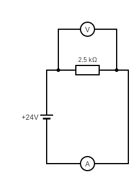
Students construct the circuit above. Calculate the current in the circuit.
I = V / R = 24 ÷ 2500 = 0.0096 A (9.6 × 10−3 A).
Question 3 (5 marks)
Students collected voltage and current data from a resistor and plotted this graph.
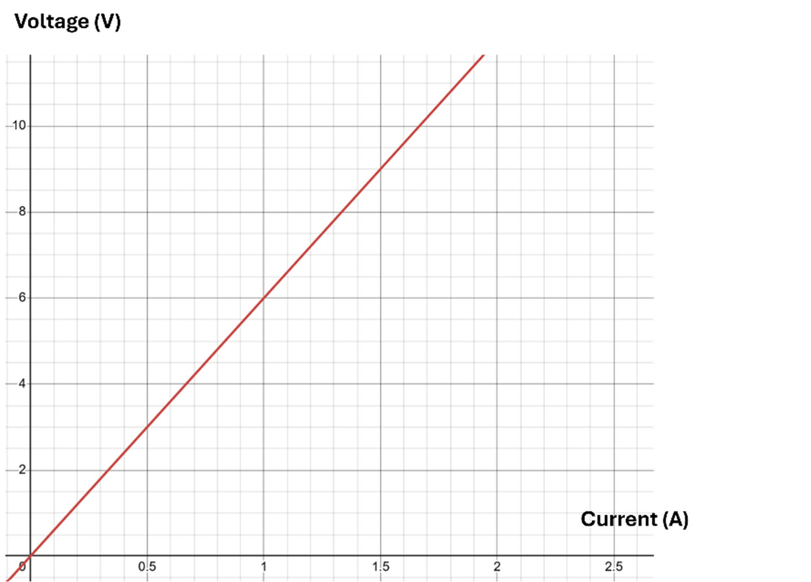
Use the graph to estimate the value of the resistor.
R = gradient = V / I = 6 ÷ 1 = 6 Ω.
Calculate the power used by the resistor when the voltage across it is 9 V.
I = V / R = 9 ÷ 6 = 1.5 A, so P = VI = 9 × 1.5 = 13.5 W.
Describe the line you would draw on the graph if a larger resistor were used.
A straight line through the origin with a steeper gradient.
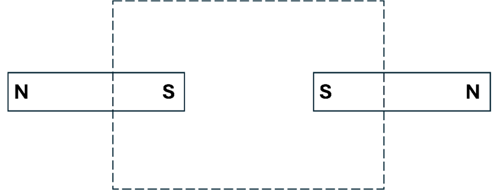
Draw (on paper) at least four magnetic field lines around the bar magnets shown. Only the area inside the dashed box is assessed. Describe them, then compare.
The field lines point into both S poles (arrows towards each S) (1 mark). Because like poles face each other, the lines from the two magnets curve away from each other (they do not join across the gap), leaving a neutral point in the middle, where there is no field (1 mark).
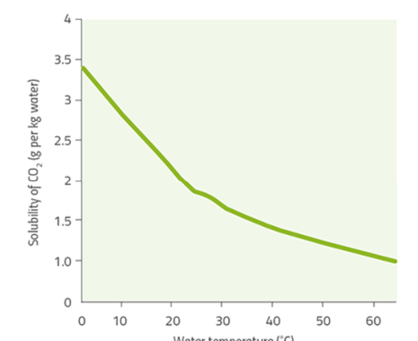
The graph shows the solubility of carbon dioxide against water temperature. Explain why rising ocean temperatures are a concern for the amount of carbon dioxide in the atmosphere. Refer to a positive feedback loop.
As ocean temperatures increase, the solubility of CO2 decreases, so the oceans hold less and more carbon dioxide stays in (or is released to) the atmosphere (1 mark). More CO2 increases the greenhouse effect, which warms the oceans further: a positive feedback loop (1 mark).
A sound wave has a frequency of 500 Hz and a wavelength of 0.67 m in air. Calculate the speed of the wave.
v = fλ = 500 × 0.67 = 335 m/s.
Explain the conduction of heat in a metal rod when one end is heated. Include what happens at the particle level.
When one end is heated, the atoms there vibrate faster (1 mark). They collide with neighbouring atoms further along the rod, increasing their vibrations too, so the energy passes along the rod and its temperature rises (1 mark). (Free electrons in the metal also carry energy along the rod.)
Explain how yellow and magenta ink can be used to produce a red image on paper.
Yellow ink absorbs blue light and reflects red and green. Magenta ink absorbs green light and reflects red and blue (1 mark). The only colour reflected by both is red, so the image looks red (1 mark).
Question 9 (5 marks)
The diagram shows light starting in water, directed upwards towards a water–air boundary, in three situations.
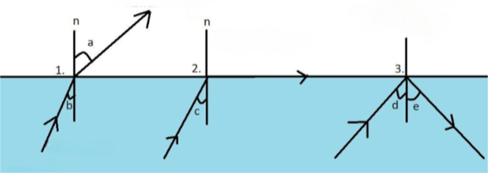
- "n" represents the .
- The critical angle is angle .
- The process shown in 3 is .
- Angles d and e are related by:
- If the water were replaced with glass (a slower medium), angle a would , assuming angle b stays the same.
(e) There is a greater change in speed from glass to air, so the light bends further away from the normal.
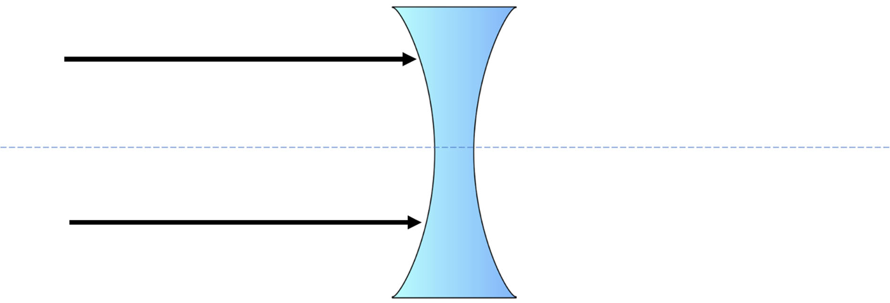
Students are investigating a glass concave lens. On paper, (a) show the paths of the two rays after they pass through the lens, and (b) find and label the virtual focal point. Describe them, then compare.
(a) Both rays spread out (diverge) after passing through the lens, bending away from the principal axis (1 mark). (b) Tracing the diverging rays backwards with dashed lines, they meet at a point on the principal axis on the same side as the incoming light: this is the virtual focal point (1 mark).
Complete the electromagnetic spectrum, in order:
Radio waves → → infrared → visible → ultraviolet → → gamma radiation
Question 12 (8 marks)
A group of students wants to test the effect of two liquid fertiliser brands, Activate and Breakout, on the growth of bean plants. The chemical composition of each brand is identical (this was independently verified), except that Activate contains ammonia at 5 g per litre. The students plant one bean seed in each of 20 identical pots and divide them into two groups:
- Group 1: 10 pots receive 1 mL of Activate each day.
- Group 2: 10 pots receive 1 mL of Breakout each day.
All other conditions (water each day, hours of daylight, potting mix) are kept the same.
State a research question based on this information.
How does the type (brand) of fertiliser affect the height of bean shoots?
Write a hypothesis that could be tested.
If brand Activate is used, the height of the bean plants will be greater, because of the ammonia in the fertiliser.
- IV: ; DV:
- The best type of graph is a .
After 4 weeks, the students measure the height of each plant and average the heights within each group.
Explain why the heights are averaged within each group.
Using multiple plants and taking the average height (1 mark) reduces the effect of random error, e.g. natural variation between individual plants, on the results (1 mark).
Their teacher suggests forming another group of 10 plants with the same set-up (pot, water, sunlight and soil) as a control group.
State the key characteristic of this group that lets it act as a control group.
It receives no fertiliser at all.
Question 13 (7 marks)
Flo and Jeremie investigated how the distance from a loudspeaker affects the loudness of sound. They set up a loudspeaker in the middle of a field and measured the loudness with a sound pressure meter.
| Distance (m) | Sound pressure (Pa) |
|---|---|
| 5.0 | 1.29 |
| 7.0 | 0.91 |
| 9.0 | 0.82 |
| 11.0 | 0.58 |
| 13.0 | 0.51 |
| 15.0 | 0.49 |
On graph paper, plot the data, add a suitable title and axis titles with units, and draw a curved line of best fit. Describe your graph, then compare.
- Points plotted correctly (3 marks).
- Title, e.g. "Sound pressure vs distance" (1 mark).
- Distance (m) on the x-axis and sound pressure (Pa) on the y-axis (1 mark).
- A smooth curved line of best fit that falls steeply at first and then levels off (1 mark).
Using your graph, estimate the sound pressure at a distance of 4.0 m from the loudspeaker.
Accept about 1.43–1.48 Pa, extending the curved line of best fit.